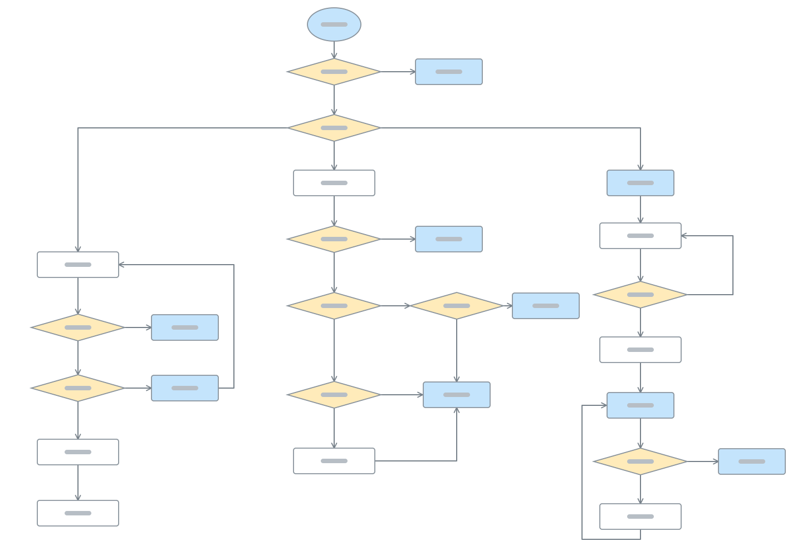
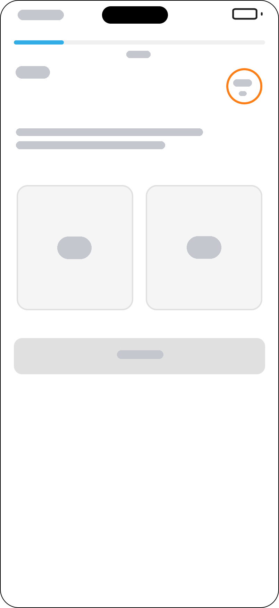
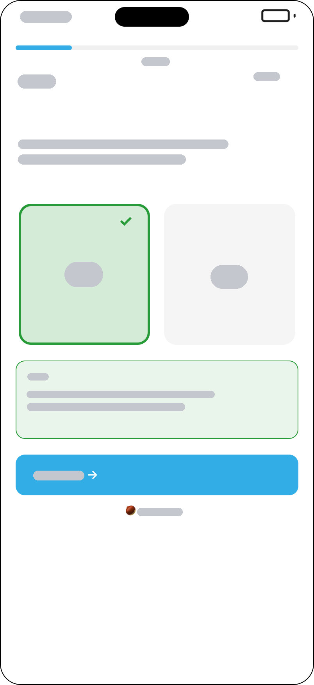

대표 사례
제가 내린 판단과 그 이유를 사례 4개로 정리했습니다. 이름을 누르면 프로젝트 상세로 이동합니다.
-
01
현장의 불편을 기능으로
주문번호만으로는 박스마다 다른 상태를 나타낼 수 없어, 주문번호와 상품 순번을 박스와 연결하는 기준부터 정했습니다.
운영 담당자가 도매몰 주문을 Excel로 내려받아 어드민에 직접 입력하는 것을 보고 연동을 기획했습니다. 일부 박스만 수거하는 주문은 도매몰의 기존 ‘부분배송’ 상태에 대응하고, 수거 연기는 별도 상태로 나눴습니다. 개발 후에는 API 호출 결과와 양쪽 화면을 대조해 시간 경계 주문 누락과 첫 박스에만 배송정보가 적용되는 오류를 QA로 등록했습니다.
내 역할: 연동 정책 기획 · 데이터 대조 · QA 등록 / 구현: 개발팀 / 결과: 담당자의 해당 수기 입력이 하루 약 1시간에서 10분으로 줄었습니다(본인 확인 기준).
-
개발자·디자이너에게 어떤 문서가 편한지 물어, 기능명세를 입력·출력·API 규격·정책·예외로 나누는 양식을 만들었습니다.
입사 초반에는 유저플로우와 구현 결과밖에 설명하지 못해 “왜?”라는 질문을 많이 받았습니다. 양식을 바꾼 뒤에는 케이스 분기까지 함께 적었고, 질문이 “이렇게 해도 될까요?”로 바뀌었습니다. 함께 일한 개발자와 디자이너에게서 구현 중에 판단할 것들이 문서에 정리되어 있어 편하다는 말을 들었습니다.
내 역할: 기획 문서 작성 · 백엔드 ERD를 기획 규칙과 대조 / 구현: 개발팀
-
03
출시 범위 조율
캐릭터와 도토리 요소는 화면에 남기면서, 출시 일정에 맞춰 구현할 기능의 범위를 조율했습니다.
디자이너는 캐릭터와 도토리 요소를 살리고 싶어 했고, 개발팀은 일정 안에 핵심 학습 기능을 완성해야 했습니다. 저는 디자인 요소를 없애지 않는 방향으로 의견을 맞추고, 첫 출시에 포함할 기능과 이후에 다룰 기능을 나눴습니다.
내 역할: PM·기획, 출시 범위 조율 / 구현: 개발팀 / 결과: App Store·Google Play 출시(팀 결과)
-
발간일을 알 수 없는 리포트에 업로드 날짜가 발간일처럼 표시되는 것을 화면 확인 중에 발견하고, 모르는 발간일은 비워 두고 사용자가 직접 입력하도록 바꿨습니다.
모델은 발간일을 찾지 못하면 비워 두는데, 화면이 그 자리에 업로드 날짜를 대신 보여 주고 있었습니다. 대체 표시를 없애 “발간 -”으로 나타내고, 발간일을 직접 고치는 기능을 넣었습니다. 태스크를 목적·범위·예외·완료 기준으로 쓰고, AI 코딩 도구가 구현하면 로컬 화면에서 다시 확인합니다.
내 역할: 1인 기획·검증 / 구현: AI 코딩 도구 활용 / 상태: 개인 사용(미출시)
기획 흐름
새 기능을 만들 때는 아래 순서로 진행합니다. 애자일로 진행할 때는 핵심 기능 하나씩 범위를 짧게 잡아 같은 과정을 반복합니다.
- 문제·사용자 확인원격으로 사용자를 돕거나 담당자가 일하는 모습을 보면서 어느 단계에서 막히는지 살핍니다.
- 범위·흐름 결정핵심 기능과 유저플로우를 정하고, MoSCoW 우선순위를 PRD·와이어프레임·명세·작업 순서에 같은 표시로 씁니다.
- 정책·예외 명세입력·출력·API 규격·정책·예외와 케이스 분기를 기능명세에 적습니다.
- 구현 협의백엔드 개발자가 만든 ERD를 기획 규칙과 대조해 의견을 전달하고, 디자이너에게는 화면 ID별 변경 내용을 넘깁니다.
- 확인·개선개발 결과를 데이터와 화면으로 대조해 QA로 등록하고, 사용자 테스트·초기 운영에서 나온 개선사항은 다음 단계로 넘깁니다.
첫 버전에 뭘 넣고, 뭘 미뤘을까? PRD부터 와이어프레임까지 · 기획 문서 5개
마켓데스크의 기획 내용을 짧게 정리한 Markdown 예시와 퀴켓의 Figma 양식 예시입니다. PRD → IA → 유저플로우 → 기능명세 → 와이어프레임 순서로 작성하며, 단계마다 앞 문서와 맞는지 확인합니다.
PRD · 마켓데스크
산업 리포트를 읽고 나서, 내 일에 쓸 내용을 다시 찾는 사람들
경제 공부를 하며 산업 리포트와 기업 리포트를 함께 읽었습니다. 한 편을 다 읽기도 벅찬데, 지난번에 본 기업과 이번 산업 변화가 어떻게 이어지는지 알려면 앞선 자료를 다시 펼쳐야 했습니다. 마켓데스크는 여기서 시작한 개인 프로젝트입니다.
- 핵심 페르소나 · 기획 직무를 준비하는 취업 준비생
- 지원할 회사를 알아보려고 산업 리포트를 읽습니다. 전체 내용을 요약해도 “이 변화가 그 회사의 제품이나 사업에는 어떤 의미일까?”라는 질문은 남습니다. 같은 자료에서도 지원 직무에 필요한 대목을 골라 원문 근거와 함께 다시 보고 싶습니다.
- 두 번째 페르소나 · 관심 기업을 꾸준히 보는 개인 투자자
- 같은 산업의 리포트를 여러 날에 걸쳐 읽습니다. 오늘 요약만 보면 어떤 숫자나 전제가 지난달과 달라졌는지 알기 어렵습니다. 날짜별로 쌓인 근거를 한 달 단위로 비교하고 싶습니다.
- 그래서 첫 버전에 넣은 것
- PDF나 텍스트를 올리면 취업·투자 중 선택한 목적별로 요약을 저장합니다. 취업을 고르면 직무까지 선택합니다. 일별 요약을 산업별로 모아 ‘이달의 흐름’을 보여주되, 원문에 없는 숫자나 전망은 비워 둡니다. 이미지 입력과 연간 회고는 다음 단계로 미뤘습니다.
- 검증할 가설
- 직무별 요약이 유용하다면 다음 리포트를 읽을 때 다시 찾을 것입니다. 일별 기록이 쌓여야 보이는 가치가 있다면 월별 화면도 열어볼 것입니다. 그래서 7일 재방문율과 월별 흐름 열람률을 검증 지표로 잡았습니다. 현재는 제가 개인적으로 사용 중이며, 이 수치는 아직 검증 전입니다.
IA
Figma 예시 퀴켓 · 내용 비운 양식

Markdown 예시 마켓데스크 · 공개용 요약
# IA: 마켓데스크
- 홈: 내 산업 목록
- 산업: 반도체 / AI / 자동차 등
- 문서 타입: 산업리포트 / 기업리포트 / 경제뉴스
- 입력 형식: PDF / 텍스트
- 렌즈: 취업(직무 선택) / 주식투자 참고: 복수 선택
- 시간별 보기
- 일별: 그날 문서 요약과 출처 페이지
- 월별: 일별 요약을 모은 이 달의 흐름
- 연별: 연간 회고: 2단계 범위유저플로우
Figma 예시 퀴켓 · 공개용으로 다시 그린 분기 도식

Markdown 예시 마켓데스크 · 공개용 요약
# 유저플로우: 마켓데스크
## 기본 흐름
로그인 → 첫 사용이면 렌즈 선택 → 대시보드
→ 산업 선택 → PDF 업로드
## 텍스트 추출
- 성공: 파싱 후 렌즈별 구조화 요약
- 실패(스캔본): OCR 경로 안내 후 파싱
## 핵심 숫자 출처 확인
- 출처 있음: 요약 검토 화면
- 출처 불명: ‘명시 없음’으로 표시한 뒤 요약 검토 화면
## 저장
사용자 검토·수정 → 일별 저장 → 일별 보기에 누적기능명세: 렌즈별 요약 기능 예시
| F07 렌즈별 구조화 요약 | 내용 |
|---|---|
| 설명 | 정해진 틀(신사업 · 기존사업 · 해외 · 핵심 숫자 · 인사이트)로 선택한 렌즈마다 추출 |
| 입력 | 페이지 표시가 붙은 문서, 선택한 렌즈 목록 |
| 출력 | 렌즈별 요약(JSON). 요약 검토 화면의 렌즈 탭으로 표시 |
| 정책 | 렌즈는 관점만 바꾸고 틀은 같게. 파싱은 한 번, 렌즈별 결과는 따로 저장 |
| API | POST /reports/{id}/extract |
| 예외 | 모델 응답 지연·오류 시 재시도하고 부분 결과는 보존 |
와이어프레임: 퀴켓 양식 예시
화면 구조와 아이콘을 남기고, 내용은 회색 막대로 비웠습니다. 이미지를 누르면 크게 볼 수 있습니다.

화면 이름 ‘파트명 입력’만 남겼습니다.

본문과 버튼 문구를 회색 막대로 바꿨습니다.

정답 상태와 해설 영역의 구조를 남겼습니다.
협업
구현에 필요한 정책·예외와 결정 사항을 협업 상대에 맞춰 전달하고, 실제로 쓰이는지까지 확인합니다.
| 상대 | 전달한 것 |
|---|---|
| 디자이너 | 화면 ID와 삭제·추가·변경 내용 |
| 개발자 | 입출력, API·DB 명칭, 정책과 예외. 백엔드 ERD는 기획 규칙과 대조해 의견 전달 |
| 대표 | 핵심 기능과 결정해야 할 쟁점 |
| 현업 담당자 | 계산 기준 설명과 사용·확인 가이드 |
| 파트너사 | 가입·연동·이용 조건 문의 응대, 내부·외부 가이드와 교육 자료 |
- 회의 운영: 퀴켓은 팀원 모두 직장인인 7인 사이드 프로젝트였습니다. 회의를 매주 일요일 밤으로 고정하고, 안건마다 꼭 참석할 사람을 미리 정했습니다. 첫 아이디어 회의를 빼고 모든 회의를 30분 안에 끝냈습니다.
- 회의록. 회의가 끝나면 결정한 것, 아직 답이 필요한 것, 바로 할 일을 나눠 적습니다. 다음 회의에서는 남겨 둔 질문부터 다시 봅니다.
- 의견이 갈릴 때: EDU:UP(교육 과정 4인 팀)에서 발표 직전 백엔드 구현 범위만 남기자는 의견이 나왔을 때, 문제 정의의 핵심 화면은 모의 데이터로라도 남기자고 제안했습니다. 일부를 유지하고, 본 설계·현재 대체 구현·다음 스프린트 계획을 표로 정리해 발표했습니다.
- 쓰이게 만들기까지: 급여명세서 기능은 배포 뒤에도 담당자들이 계산이 틀릴까 걱정해 쓰지 않았습니다. 회의에서 화면을 띄워 계산 기준을 설명하고 사용·확인 가이드를 전달한 뒤, 내부에서 실제 급여 계산에 쓰이기 시작했습니다.
개발
프론트엔드 (FE)
광고 검토 서비스의 프론트엔드 전체를 React와 TypeScript로 구현했습니다. 이미지에서 잘못 읽힌 글자를 담당자가 고칠 수 있도록, 원본을 확대해 추출 문구와 대조하고 바로 수정하는 화면을 만들었습니다. 파일 업로드가 끝나기 전에 검토 요청이 나가던 문제도 고쳤습니다. 광고 검토 화면에서 맡은 일
백엔드 (BE)
세무 상담 서비스 TaxDesk를 테스트하다가, 입력하지 않은 소득이 0원으로 처리돼 세액이 나오는 걸 발견했습니다. Spring Boot 서버에서 소득 조회, 과세 판정, 세액 계산 순서를 정하고 필요한 금액이 빠지면 다시 묻게 했습니다. 같은 조건으로 모의 테스트를 돌려 계산을 멈추는지 확인했습니다. TaxDesk의 계산 흐름과 테스트
AI
광고 이미지의 문구를 읽는 OCR과, 문구가 어떤 대상이나 조건을 강조하는지 살피는 시각 언어 모델(VLM)을 연결했습니다. 모델이 근거로 든 문장이 실제로 그 줄에 있는지 코드로 대조하고, 위치를 하나로 특정할 수 있는 인용만 다음 검토에 넘겼습니다. VLM 연결은 로컬에서 합성 광고로 확인했습니다. OCR과 VLM을 연결한 과정
인프라
강의·과제 관리 앱 ClassTrack으로 Docker 배포를 실습했습니다. 빌드 단계와 실행 단계를 나눠 컨테이너 이미지를 만들고 배포했습니다. 개인용 메일 요약봇은 GitHub Actions로 매일 아침 실행되도록 설정해, 요약한 메일을 Discord로 받았습니다.
기타 AI 활용
- 기획 문서 검토. 사용자·개발자·디자이너가 각각 어디서 헷갈릴지 AI에 물어봅니다. 나온 의견을 읽고 실제로 고칠 부분을 고릅니다.
- 코딩 도구와 작업할 때. 시작하기 전에 예외 상황과 완료 기준을 적습니다. 도구가 구현과 1차 테스트를 끝내면 제가 로컬에서 화면을 열어 그 조건을 다시 확인합니다.
- 프롬프트 정리. 발표 자료나 보고서를 만들 때 자주 쓰는 프롬프트는 템플릿 허브에 문서 종류별로 정리해 두고 꺼내 씁니다.
도구별 설정과 확인 방법은 Dev Notes에 기록합니다.